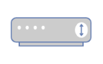

Netzwerktechnik
Grundkonzepte von Netzwerken beschreiben
Arbeitsauftrag - Grundkonzepte von Netzwerken beschreiben
Aufgabe 1
Ein Netzwerk ist eine Verbindung von zwei oder mehr Computern oder anderen Geräten, die miteinander kommunizieren können, um Ressourcen und Informationen auszutauschen. Netzwerke können auf verschiedene Arten organisiert sein, und sie ermöglichen die gemeinsame Nutzung von Daten, Hardware und Diensten.
Peer-to-Peer-Verbindung:
- In einem Peer-to-Peer-Netzwerk sind alle Geräte gleichberechtigt (Peers) und können miteinander kommunizieren, ohne dass ein zentraler Server erforderlich ist.
- Jedes Gerät kann sowohl als Client (Anforderung von Ressourcen oder Diensten) als auch als Server (Bereitstellung von Ressourcen oder Diensten) fungieren.
- Typische Anwendungen von Peer-to-Peer-Netzwerken sind das gemeinsame Nutzen von Dateien zwischen Computern in einem kleinen Büro, die Dateien über das Internet teilen.
Client-Server-Verbindung:
- In einem Client-Server-Netzwerk gibt es eine klare Unterscheidung zwischen Clients und Servern. Die Server stellen Ressourcen oder Dienste zur Verfügung, während die Clients diese Ressourcen anfordern.
- Server sind in der Regel leistungsstärkere und speziell dafür konfigurierte Geräte, die Anfragen von Clients bearbeiten und Daten oder Dienste bereitstellen.
- Beispiele für Client-Server-Anwendungen sind Webserver (die Webseiten an Browser-Clients senden), E-Mail-Server (die E-Mails an E-Mail-Clients senden) und Datenbankserver (die Daten abrufbar machen).
Aufgabe 2
- Ressourcenfreigabe: Computer-Netzwerke ermöglichen die gemeinsame Nutzung von Hardware-Ressourcen wie Druckern, Scannern, Speichergeräten und anderen Peripheriegeräten. Dies reduziert die Anschaffungskosten und verhindert die Redundanz von Ressourcen.
- Datenfreigabe: Netzwerke ermöglichen die gemeinsame Nutzung und den Zugriff auf Dateien und Datenbanken, wodurch die Zusammenarbeit und der Datenaustausch in Unternehmen und zwischen Einzelpersonen vereinfacht werden.
- Kommunikation: Computer-Netzwerke bieten effiziente Kommunikationsmittel. E-Mail, Instant Messaging, Videoanrufe und VoIP sind Beispiele für Kommunikationsanwendungen, die von Netzwerken unterstützt werden.
- Zugriff auf das Internet: Netzwerke ermöglichen den Zugriff auf das World Wide Web und andere Online-Ressourcen. Dies ist für Recherche, E-Commerce, soziale Netzwerke und viele andere Aspekte des modernen Lebens von entscheidender Bedeutung.
- Zentralisierte Verwaltung: Netzwerke erleichtern die zentrale Verwaltung und Aktualisierung von Software, Sicherheitseinstellungen und anderen Aspekten der IT-Infrastruktur in Unternehmen.
- Sicherheit: Netzwerke ermöglichen die Implementierung von Sicherheitsmaßnahmen wie Firewalls, Verschlüsselung und Zugriffskontrollen, um Daten und Ressourcen zu schützen.
- Skalierbarkeit: Unternehmen können ihre Netzwerke einfach erweitern, wenn sie wachsen, ohne die gesamte Infrastruktur neu erstellen zu müssen.
- Redundanz und Ausfallsicherheit: Netzwerke können so konfiguriert werden, dass sie Redundanz und Ausfallsicherheit bieten, um sicherzustellen, dass wichtige Systeme auch im Falle eines Hardwarefehlers weiterhin verfügbar sind.
- Remote-Zugriff: Mit Netzwerken können Benutzer von entfernten Standorten aus auf Ressourcen und Daten zugreifen, was die Flexibilität und die Möglichkeit zur Fernarbeit erhöht.
Aufgabe 3
| Abbildung | Bezeichnung | Beschreibung |
|---|---|---|
| Router | Ein Router ist ein wesentliches Element in einem Netzwerk, da er den Datenverkehr zwischen verschiedenen Netzwerksegmenten, einschließlich lokaler Netzwerke (LANs) und dem Internet, steuert. Router bestimmen den besten Pfad für Datenpakete, um sie zu ihrem Ziel zu leiten. Die Hauptaufgabe ist das verbinden zweier Netzwerke miteinander. | |
| Patch-Panel | Ein Patchpanel ist eine rechteckige oder quadratische Platte mit vielen Anschlüssen oder Ports. Es wird in der Regel in Serverräumen, Rechenzentren oder Verkabelungsschränken montiert. Die Ports des Patchpanels sind in der Regel standardisierte RJ45-Buchsen für Ethernet-Kabelverbindungen. Jeder Port auf dem Patchpanel ist mit einem spezifischen Kabel in einem Netzwerk verbunden. Das Patchpanel erleichtert die physische Verbindung von Geräten und die Organisation von Netzwerkkabeln | |
| Switch | Ein Switch ist ein Gerät, das in lokalen Netzwerken (LANs) verwendet wird, um Datenpakete zwischen Geräten in einem Netzwerk weiterzuleiten. Switches sind in der Regel schneller als Hubs und unterstützen eine effiziente Kommunikation zwischen Geräten. | |
| Hub | Ein Hub ist ein einfaches Gerät, das Datenpakete an alle angeschlossenen Geräte im Netzwerk sendet. Hubs werden heute selten eingesetzt, da sie weniger effizient sind als Switches. | |
| Access Point (AP) | Ein Access Point ist ein Gerät, das drahtlose Netzwerke (WLANs) bereitstellt. Es ermöglicht drahtlosen Geräten, sich mit dem Netzwerk zu verbinden, um auf Ressourcen und das Internet zuzugreifen. | |
|  | Modem | Ein Modem (Modulator-Demodulator) ermöglicht die Verbindung eines Netzwerks mit dem Internet über verschiedene Übertragungsmedien wie DSL, Kabel oder Glasfaser. Es wandelt digitale Daten in analoge Signale um und umgekehrt. |
| Netzwerkkarten (Network Interface Cards, NICs) | Netzwerkkarten sind Hardwarekomponenten, die in Computern und anderen Geräten eingebaut sind, um eine physische Verbindung zum Netzwerk herzustellen. Sie können drahtgebundene (Ethernet) oder drahtlose (WLAN) Verbindungen unterstützen. | |
| (Hardware) Firewalls | Firewalls sind Sicherheitsgeräte, die den Datenverkehr überwachen und filtern, um unerwünschten Zugriff und schädliche Aktivitäten zu verhindern. Sie schützen Netzwerke vor Bedrohungen aus dem Internet. | |
| Proxy-Server | Ein Proxy-Server fungiert als Vermittler zwischen internen Netzwerken und dem Internet. Er kann den Datenverkehr filtern, Zwischenspeicherung durchführen, Lastverteilungen durchführen und Sicherheitsfunktionen bereitstellen. | |
| Kabel und Verkabelung | Die Auswahl der richtigen Kabel und Verkabelung ist entscheidend, um die physische Verbindung zwischen Geräten und Netzwerkkomponenten sicherzustellen. Dies umfasst Ethernet-Kabel (Cat5e, Cat6, Cat7), Glasfaserkabel und koaxiale Kabel. | |
| Sicherheitsgeräte | Neben Firewalls umfassen Sicherheitsgeräte wie Intrusion Detection Systems (IDS) und Intrusion Prevention Systems (IPS) Hardwarekomponenten, die Netzwerke vor Sicherheitsbedrohungen schützen. |
Aufgabe 4
- Preis: Welches Budget steht zur Verfügung.
- Geschäftsanforderungen: Es ist entscheidend, die geschäftlichen Ziele und Anforderungen des Kunden zu verstehen. Welche Art von Diensten und Anwendungen sollen unterstützt werden? Welche Leistungsanforderungen gibt es?
- Größe und Skalierbarkeit: Berücksichtigen Sie die Größe des Netzwerks und die mögliche zukünftige Expansion. Das Netzwerk muss skalierbar sein, um mit dem Wachstum des Unternehmens Schritt zu halten.
- Budget und Ressourcen: Das Budget des Kunden und die verfügbaren Ressourcen sind wichtige Faktoren. Die Netzwerkplanung muss innerhalb des Budgets bleiben und die verfügbaren Ressourcen optimal nutzen.
- Netzwerktopologie: Die Auswahl der richtigen Netzwerktopologie (z.B. Stern, Bus, Ring, Mesh) hängt von den Anforderungen des Kunden ab. Die Topologie beeinflusst die Skalierbarkeit, Redundanz und Leistung des Netzwerks.
- Verkabelung und Infrastruktur: Die Auswahl der richtigen Art der Verkabelung (z. B. Kupfer- oder Glasfaserkabel) und die Gestaltung der Netzwerkinfrastruktur sind entscheidend für die Netzwerkzuverlässigkeit und -leistung.
- Netzwerkprotokolle und -technologien: Die Auswahl der richtigen Netzwerkprotokolle und -technologien (z. B. Ethernet, WLAN, VPN) hängt von den spezifischen Anforderungen des Kunden ab.
- Sicherheit: Die Sicherheit des Netzwerks ist von entscheidender Bedeutung. Berücksichtigen Sie die Sicherheitsanforderungen des Kunden, um das Netzwerk vor Bedrohungen zu schützen.
- QoS (Quality of Service): Wenn das Netzwerk Sprach- oder Videokommunikation unterstützen soll, ist die Implementierung von QoS wichtig, um eine hohe Qualität und geringe Latenzzeiten sicherzustellen.
- Redundanz und Ausfallsicherheit: Planen Sie Redundanzmechanismen, um sicherzustellen, dass das Netzwerk bei Ausfällen oder Störungen weiterhin funktioniert. Lastverteilung im Netzwerk sollte ebenfalls berücksichtigt werden.
- Drahtlos oder kabelgebunden: Entscheiden Sie, ob das Netzwerk drahtlos oder kabelgebunden sein soll, und berücksichtigen Sie die Abdeckung und Leistung von WLAN in verschiedenen Bereichen.
- Verwaltung und Wartung: Denken Sie an Netzwerkmanagementtools und -prozesse, um das Netzwerk effizient zu verwalten und Wartungsarbeiten durchzuführen.
- Rechtsvorschriften und Compliance: Stellen Sie sicher, dass das Netzwerk den geltenden gesetzlichen Bestimmungen und Compliance-Anforderungen entspricht.
- Benutzerzugriff und Berechtigungen: Planen Sie die Zugriffsrechte und Berechtigungen sorgfältig, um sicherzustellen, dass Benutzer nur auf die für sie relevanten Ressourcen zugreifen können.
Clients einem Netzwerk hinzufügen
Arbeitsauftrag - Clients einem Netzwerk hinzufügen
Aufgabe 1
- IP-Adresse: Der Netzwerk-Client benötigt eine eindeutige IP-Adresse, um im Netzwerk identifiziert zu werden. Diese Adresse kann statisch (manuell konfiguriert) oder dynamisch (durch DHCP) zugewiesen werden.
- Subnetzmaske: Die Subnetzmaske wird verwendet, um festzulegen, welcher Bereich von IP-Adressen im Netzwerk lokal erreichbar ist. Sie bestimmt die Netzwerkteilung und die IP-Bereiche, die im selben Subnetz liegen.
- Gateway-Adresse: Das Gateway ist die IP-Adresse des Routers, der den Netzwerkverkehr zwischen dem lokalen Netzwerk und anderen Netzwerken, wie dem Internet, vermittelt. Der Netzwerk-Client muss wissen, welche IP-Adresse als Gateway verwendet wird.
- DNS-Server-Adresse: Der DNS-Server (Domain Name System) wird verwendet, um Domainnamen in IP-Adressen aufzulösen. Der Netzwerk-Client benötigt mindestens eine DNS-Server-Adresse, um Internetdienste und Ressourcen im Netzwerk anhand von Namen statt IP-Adressen zu erreichen.
Aufgabe 2
Ein DHCP-Server (Dynamic Host Configuration Protocol) übernimmt in einem Netzwerk verschiedene Aufgaben in Bezug auf die Zuweisung von IP-Adressen und anderen Netzwerkkonfigurationsinformationen an angeschlossene Clients.
- IP-Adresszuweisung: Der DHCP-Server weist IP-Adressen an Netzwerkclients dynamisch zu. Dies bedeutet, dass er Clients bei Bedarf eine freie IP-Adresse aus einem vordefinierten Adresspool zuweist. Dies erleichtert die Verwaltung von IP-Adressen im Netzwerk, da keine manuelle Konfiguration erforderlich ist.
- Subnetzmaskenzuweisung: Der DHCP-Server weist den Clients auch die passende Subnetzmaske zu, um festzulegen, welcher Bereich von IP-Adressen im lokalen Netzwerk erreichbar ist.
- Gateway-Informationen: Der DHCP-Server teilt den Clients die IP-Adresse des Standardgateways mit, das für die Weiterleitung von Datenverkehr außerhalb des lokalen Netzwerks verwendet wird.
- DNS-Server-Informationen: Der DHCP-Server gibt den Clients die IP-Adressen der DNS-Server im Netzwerk, die zur Auflösung von Domainnamen in IP-Adressen benötigt werden.
- Weitere Konfigurationsoptionen: DHCP kann auch zusätzliche Informationen wie Zeitserver, NTP-Server, WINS-Server und spezielle DHCP-Optionen bereitstellen, die von den Clients verwendet werden können.
- Leasemanagement: DHCP-Server weisen IP-Adressen auf Zeitbasis zu. Clients erhalten eine temporäre Leasetime für die zugewiesene IP-Adresse, und der DHCP-Server aktualisiert oder erneuert die Leases, wenn sie ablaufen. Dies ermöglicht die effiziente Nutzung von IP-Adressen, da nicht verwendete Adressen freigegeben werden.
- Fehlerbehandlung: Der DHCP-Server kann Fehler behandeln, wie z.B. IP-Adresskonflikte, die auftreten können, wenn eine bereits verwendete IP-Adresse erneut zugewiesen wird.
Aufgabe 3
Für Windows-Systeme:
- Öffnen Sie die Eingabeaufforderung (CMD): Klicken Sie auf "Start", geben Sie "cmd" in das Suchfeld ein und drücken Sie "Enter". Dies öffnet das Eingabeaufforderungsfenster.
- Geben Sie den Befehl "ipconfig" ein und drücken Sie "Enter". Dieser Befehl zeigt Ihnen Informationen zur Netzwerkkonfiguration Ihres Windows-Systems, einschließlich Ihrer IP-Adresse, Subnetzmaske, Standardgateway und DNS-Server.
- Für weitere Details können Sie "ipconfig /all" eingeben. Dies zeigt erweiterte Informationen, einschließlich Ihrer MAC-Adresse und DHCP-Konfiguration.
- Wenn Sie Informationen zur Netzwerkkarte benötigen, können Sie den Befehl "netsh interface show interface" verwenden, um Details zur Netzwerkschnittstelle anzuzeigen.
Für Linux-Systeme:
- Öffnen Sie das Terminal: Je nach Ihrem Linux-Desktop-Umgebung können Sie das Terminal über das Anwendungsmenü oder mit einer Tastenkombination öffnen.
- Geben Sie den Befehl "ifconfig" ein und drücken Sie "Enter". Dieser Befehl zeigt Informationen zur Netzwerkkonfiguration Ihres Linux-Systems, einschließlich Ihrer IP-Adresse, Subnetzmaske und MAC-Adresse.
- Für neuere Linux-Distributionen oder solche, die das "ip" -Befehlszeilenwerkzeug verwenden, können Sie "ip addr show" verwenden, um ähnliche Informationen anzuzeigen.
- Wenn Sie weitere Netzwerkinformationen benötigen, können Sie "route -n" verwenden, um Details zu Ihrer Routing-Tabelle anzuzeigen.
- Für erweiterte Informationen und Konfigurationen können Sie je nach Linux-Distribution das Network Manager-Tool oder das "nmcli" -Befehlszeilenwerkzeug verwenden.
Aufgabe 4
Um die Netzwerkverbindung zu einem anderen Client im Netzwerk zu testen, können Sie den "ping" -Befehl verwenden. Dieser Befehl wird verwendet, um festzustellen, ob ein Remote-Host (in diesem Fall der Ziel-Client mit der IP-Adresse 192.168.178.2) erreichbar ist.
> ping 192.168.178.2
Wenn der Ziel-Client erreichbar ist und die Verbindung ordnungsgemäß funktioniert, erhalten Sie eine Antwort vom Ziel-Client in Form von ICMP-Echo-Antworten. Wenn Sie keine Antwort erhalten oder "Zeitüberschreitung" oder "Host nicht erreichbar" sehen, bedeutet dies, dass es ein Problem mit der Verbindung zum Ziel-Client gibt.
Aufgabe 5
Für private Netzwerke werden spezielle IP-Adressbereiche verwendet, die in den folgenden RFC-Dokumenten (Request for Comments) festgelegt sind, um Konflikte mit öffentlichen IP-Adressen im Internet zu vermeiden. Diese privaten IP-Adressbereiche sind für die Verwendung in privaten Netzwerken und lokalen Netzwerken reserviert:
IPv4-Adressbereiche für private Netze:
- 10.0.0.0 bis 10.255.255.255 (10.0.0.0/8): Dieser Bereich umfasst 16.777.216 IP-Adressen und ist für größere private Netzwerke geeignet.
- 172.16.0.0 bis 172.31.255.255 (172.16.0.0/12): Dieser Bereich umfasst 1.048.576 IP-Adressen und wird häufig in mittelgroßen Netzwerken verwendet.
- 192.168.0.0 bis 192.168.255.255 (192.168.0.0/16): Dieser Bereich bietet 65.536 IP-Adressen und ist für kleinere Netzwerke oder Heimnetzwerke geeignet.
IPv6-Adressbereiche für private Netze:
- fc00::/7: Dieser Bereich ist für IPv6-Adressen in privaten Netzwerken reserviert. Innerhalb dieses Bereichs können private IPv6-Adressbereiche erstellt werden, um die Adressierung in lokalen Netzwerken zu ermöglichen.
OSI-Modell nutzen
Aufgabe 1
| Layer-Nr. | Englischer Name | Deutscher Name | Aufgaben der Schicht |
|---|---|---|---|
| 7 | Application | Anwendung | Bereitstellung von Netzwerkdiensten für Anwendungen |
| 6 | Presentation | Darstellung | Datenübersetzung, Verschlüsselung und Kompression |
| 5 | Session | Sitzung | Aufrechterhaltung und Beendigung von Kommunikationssitzungen |
| 4 | Transport | Transport | Zuverlässiger Datenaustausch und Flusskontrolle |
| 3 | Network | Netzwerk | Routing, Logische Adressierung, Paketweiterleitung |
| 2 | Data Link | Sicherung | Zuverlässige Datenübertragung im lokalen Netzwerk |
| 1 | Physical | Bitübertragungsschicht | Physikalische Verbindung und Bitübertragung |
Aufgabe 2
- Standardisierung:
- Ziel: Eine gemeinsame Basis für die Entwicklung von Netzwerktechnologien schaffen.
- Erläuterung: Das OSI-Referenzmodell bietet einen Rahmen für die Standardisierung von Netzwerkprotokollen und -technologien. Dies ermöglicht die Interoperabilität verschiedener Systeme und Geräte, die auf der ganzen Welt entwickelt werden.
- Klare Strukturierung:
- Ziel: Die Komplexität von Netzwerken in überschaubare Schichten unterteilen.
- Erläuterung: Das Modell organisiert Netzwerkfunktionalitäten in sieben klar definierte Schichten. Dies erleichtert das Verständnis, die Entwicklung und den Betrieb von Netzwerklösungen, indem komplexe Aufgaben in leichter handhabbare Teile zerlegt werden.
- Fehlerisolierung und -behebung:
- Ziel: Die Lokalisierung von Fehlern in Netzwerken vereinfachen.
- Erläuterung: Durch die klare Schichtstruktur des OSI-Modells kann bei Netzwerkproblemen leichter identifiziert werden, in welcher Schicht der Fehler auftritt. Dies erleichtert die Fehlerdiagnose und -behebung.
- Förderung von Interoperabilität:
- Ziel: Die Kommunikation zwischen unterschiedlichen Systemen und Technologien ermöglichen.
- Erläuterung: Das OSI-Modell fördert die Interoperabilität, da es als Referenzrahmen dient, dem verschiedene Hersteller bei der Entwicklung ihrer Netzwerkprodukte folgen können. Dadurch wird die nahtlose Integration von Produkten unterschiedlicher Hersteller erleichtert.
Aufgabe 3
- Bitübertragungsschicht (Physical Layer):
- Aufgaben: Übertragung von Bitfolgen über physikalische Medien (Kabel, Funkwellen).
- Genutzte Pakete: Bits.
- Mögliche Fehler: Signalverlust, Rauschen, Physische Kabelprobleme.
- Sicherungsschicht (Data Link Layer):
- Aufgaben: Zuverlässige Übertragung von Frames zwischen direkt benachbarten Knoten. Adressierung, Fehlererkennung und -korrektur.
- Genutzte Pakete: Frames.
- Mögliche Fehler: Kollisionen, verlorene Frames, Duplikate.
- Netzwerkschicht (Network Layer):
- Aufgaben: Logische Adressierung, Routing von Paketen zwischen verschiedenen Netzwerken, Paketweiterleitung.
- Genutzte Pakete: Pakete.
- Mögliche Fehler: Fehlerrate bei der Weiterleitung, Routing-Probleme.
- Transportschicht (Transport Layer):
- Aufgaben: Segmentierung von Daten in kleinere Einheiten, Flusskontrolle, Zuverlässige Übertragung von Daten zwischen Endsystemen.
- Genutzte Pakete: Segmente.
- Mögliche Fehler: Datenverlust, Überlastung, fehlerhafte Reihenfolge der Segmente.
- Sitzungsschicht (Session Layer):
- Aufgaben: Aufrechterhaltung und Beendigung von Sitzungen, Synchronisation von Datenübertragung.
- Genutzte Pakete: Keine eigenen Pakete, verwendet die Dienste der darunterliegenden Schichten.
- Mögliche Fehler: Sitzungsabbruch, Probleme bei der Synchronisation.
- Darstellungsschicht (Presentation Layer):
- Aufgaben: Datenübersetzung, Verschlüsselung, Kompression, Umwandlung von Datenformaten.
- Genutzte Pakete: Keine eigenen Pakete, verwendet die Dienste der darunterliegenden Schichten.
- Mögliche Fehler: Probleme bei der Datenübersetzung, Dekodierung oder Verschlüsselung.
- Anwendungsschicht (Application Layer):
- Aufgaben: Bereitstellung von Netzwerkdiensten für Anwendungen, Nutzerinteraktion.
- Genutzte Pakete: Nutzerdaten.
- Mögliche Fehler: Anwendungsfehler, unerwartetes Verhalten von Anwendungen.
Wichtige Protokolle zuordnen
Aufgabe 1
| Protokoll | OSI-Schicht | Ausgeschriebener Name | Beschreibung |
|---|---|---|---|
| DNS | Anwendung | Domain Name System | Übersetzt Hostnamen in IP-Adressen und umgekehrt. |
| SMB | Sicherung | Server Message Block | Protokoll für die Datei- und Druckerfreigabe in Netzwerken. |
| NFS | Anwendung | Network File System | Ermöglicht den Zugriff auf Dateien über ein Netzwerk. |
| SMTP/S | Anwendung | Simple Mail Transfer Protocol/Secure | Überträgt E-Mails zwischen Servern. |
| HTTP/S | Anwendung | Hypertext Transfer Protocol/Secure | Überträgt Webseiteninhalte über das Internet. |
| IPSEC | Sicherung | IP Security | Bietet Sicherheit für die Kommunikation auf Netzwerkschicht. |
| IP | Netzwerk | Internet Protocol | Ermöglicht die Übertragung von Datenpaketen im Netzwerk. |
| TCP | Transport | Transmission Control Protocol | Gewährleistet zuverlässige, geordnete Datenübertragung. |
| UDP | Transport | User Datagram Protocol | Überträgt Daten ohne Bestätigung oder Verbindungsaufbau. |
| SSH | Anwendung | Secure Shell | Sichert die Kommunikation über unsichere Netzwerke. |
| DHCP | Anwendung | Dynamic Host Configuration Protocol | Automatisiert die Vergabe von Netzwerkkonfigurationen. |
| ARP | Sicherung | Address Resolution Protocol | Ermittelt die Hardwareadresse zu einer IP-Adresse im lokalen Netzwerk. |
| TLS | Sicherung | Transport Layer Security | Gewährleistet sichere Datenübertragung über das Internet. |
Aufgabe 2
Allgemein
- Benutzername und Passwort:
- Benutzername: Die E-Mail-Adresse des Kontos, z.B. "benutzername@example.com".
- Passwort: Das Passwort, das mit dem E-Mail-Konto verknüpft ist.
- E-Mail-Protokoll und Serverinformationen:
- E-Mail-Protokoll: IMAP (Internet Message Access Protocol) oder POP3 (Post Office Protocol).
- Eingangsserver (IMAP/POP3): z.B. "imap.example.com" oder "pop.example.com".
- Ausgangsserver (SMTP): z.B. "smtp.example.com".
- Verschlüsselungsmethoden:
- SSL/TLS: Informationen darüber, ob SSL (Secure Sockets Layer) oder TLS (Transport Layer Security) für die Verschlüsselung verwendet werden sollen. Dies betrifft sowohl den Eingangs- als auch den Ausgangsserver.
- Portnummern:
- IMAP-Port: Normalerweise 143 (unverschlüsselt) oder 993 (verschlüsselt).
- POP3-Port: Normalerweise 110 (unverschlüsselt) oder 995 (verschlüsselt).
- SMTP-Port: Normalerweise 25 (unverschlüsselt), 587 (verschlüsselt), oder 465 (verschlüsselt).
- Authentifizierungsmethode:
- Informationen darüber, ob die Authentifizierung über Passwort, OAuth (Open Authorization) oder ein anderes Verfahren erfolgt.
- Domaininformationen (falls zutreffend):
- Manchmal erfordern bestimmte E-Mail-Anbieter die Eingabe der Domäne, z.B. "example.com".
E-Mail-Konfiguration für die MMBbS:
- Empfangsserver (IMAP): mail.mm-bbs.de
- Server-Port (IMAP): 143
- Sendeserver (SMTP): mail.mm-bbs.de
- Server-Port (SMTP): 25
- Benutzername: Ihre E-Mail Adresse (@mm-bbs.de)
- Passwort: Ihr Portal (WLAN) Passwort
- Verschlüsselung: STARTTLS
Aufgabe 3
HTTP (Hypertext Transfer Protocol):
-
Nicht sicher: HTTP ist ein unverschlüsseltes Protokoll, was bedeutet, dass die Daten, die zwischen dem Webserver und dem Browser übertragen werden, in Klartext lesbar sind.
-
Port: HTTP verwendet normalerweise Port 80 für die Kommunikation.
-
Keine Authentifizierung: HTTP bietet keine integrierte Möglichkeit zur Authentifizierung von Servern oder Clients.
HTTPS (Hypertext Transfer Protocol Secure):
-
Sicher: HTTPS ist die sichere Version von HTTP. Hierbei werden die Daten zwischen dem Webserver und dem Browser verschlüsselt, was die Vertraulichkeit und Integrität der übertragenen Daten gewährleistet.
-
Verschlüsselung: HTTPS verwendet SSL (Secure Sockets Layer) oder das modernere TLS (Transport Layer Security) zur Verschlüsselung der Datenübertragung.
-
Port: HTTPS verwendet normalerweise Port 443 für die Kommunikation.
-
Authentifizierung: HTTPS ermöglicht die Authentifizierung des Servers durch digitale Zertifikate. Dadurch kann der Browser sicherstellen, dass er mit dem tatsächlichen Server und nicht mit einem potenziell bösartigen Server verbunden ist.
SSL (Secure Sockets Layer) Verschlüsselung:
Die SSL-Verschlüsselung, die jetzt oft durch das sicherere TLS-Protokoll ersetzt wurde, funktioniert folgendermaßen:
-
Handshake: Der SSL/TLS-Handshake ist der Prozess, bei dem der Server und der Client sich auf die Verschlüsselungsmethoden einigen und die erforderlichen Schlüssel austauschen. Dies beinhaltet auch die Überprüfung der Integrität der erhaltenen Zertifikate.
-
Verschlüsselung: Nach dem Handshake wird eine sichere Verbindung hergestellt, und die Datenübertragung zwischen Server und Client erfolgt verschlüsselt. Dies bedeutet, dass selbst wenn ein Angreifer die übertragenen Daten abfängt, er sie nicht ohne den richtigen Schlüssel entschlüsseln kann.
-
Entschlüsselung beim Empfänger: Der Empfänger (Server oder Client) entschlüsselt die empfangenen Daten mit dem entsprechenden Schlüssel, um sie im Klartext zu erhalten.
SSL/TLS bietet somit eine sichere Kommunikation über unsichere Netzwerke wie das Internet, indem es die Vertraulichkeit, Integrität und Authentizität der übertragenen Daten gewährleistet.
Aufgabe 4
HTTPS-Inspection, auch als HTTPS Interception oder SSL/TLS Inspection bekannt, bezieht sich auf einen Prozess, bei dem der Inhalt von verschlüsselten HTTPS-Verbindungen von einem Sicherheitsgerät (z.B., Firewalls, Proxy-Server, Content-Filter) entschlüsselt, inspiziert und anschließend wieder verschlüsselt wird, bevor er an den ursprünglichen Empfänger gesendet wird. Dieser Vorgang wird oft in Unternehmensnetzwerken und Sicherheitsinfrastrukturen eingesetzt, um die Sicherheit und Kontrolle über den Datenverkehr zu erhöhen.
Hier sind die grundlegenden Schritte des HTTPS-Inspection-Prozesses:
- Entschlüsselung des HTTPS-Verkehrs:
-
Das Sicherheitsgerät, das HTTPS-Inspection durchführt, fungiert als sogenannter "Man-in-the-Middle". Es empfängt die verschlüsselten Daten, entschlüsselt sie und kann somit den Klartextinhalt einsehen.
-
Inspektion des Datenverkehrs:
-
Der entschlüsselte Datenverkehr wird vom Sicherheitsgerät inspiziert. Dies kann verschiedene Sicherheitsmaßnahmen umfassen, wie das Überprüfen auf schädliche Inhalte, Filtern unerwünschter Websites, Implementierung von Sicherheitsrichtlinien oder Überwachung der Aktivitäten im Netzwerk.
-
Wieder-Verschlüsselung und Weiterleitung:
- Nachdem der Datenverkehr inspiziert wurde, wird er vom Sicherheitsgerät wieder verschlüsselt, um die ursprüngliche Verschlüsselung beizubehalten. Anschließend wird der Datenverkehr an das ursprüngliche Ziel (z.B., Webserver) weitergeleitet.
Die Gründe für die Implementierung von HTTPS-Inspection können sein:
-
Sicherheitskontrolle: Die Möglichkeit, verschlüsselten Datenverkehr zu inspizieren, ermöglicht es Sicherheitslösungen, bösartige Aktivitäten zu erkennen, schädliche Inhalte zu blockieren und Sicherheitsrichtlinien durchzusetzen.
-
Compliance: In einigen Branchen und Organisationen sind Sicherheitsüberprüfungen und Kontrollen erforderlich, um bestimmten Compliance-Anforderungen zu entsprechen.
Soziale und sicherheitsbezogene Gesichtspunkte
HTTPS-Inspection hat auch kontroverse Aspekte, insbesondere im Hinblick auf die Privatsphäre. Da es eine Entschlüsselung des Datenverkehrs erfordert, kann dies zu Bedenken hinsichtlich der Vertraulichkeit und des Datenschutzes führen. Daher sollte der Einsatz von HTTPS-Inspection sorgfältig abgewogen und transparent kommuniziert werden, um die Erwartungen der Benutzer in Bezug auf Privatsphäre zu berücksichtigen.
Die Entschlüsselung und Inspektion des HTTPS-Verkehrs durch HTTPS-Inspection-Punkte kann potenziell von Angreifern ausgenutzt werden, wenn nicht angemessen implementiert und geschützt. Eine der bekannteren Methoden stellen die Man-in-the-Middle-Angriffe (MitM) dar. Ein Angreifer könnte versuchen, die Rolle des "Man-in-the-Middle" zu übernehmen, indem er die Entschlüsselungspunkte im HTTPS-Inspection-System ausnutzt. Dies könnte durch falsche Zertifikate oder Schwächen in der Implementierung erreicht werden.
Netzwerkkomponenten unterscheiden
Arbeitsauftrag - Netzwerkkomponenten unterscheiden
Aufgabe 1
Kopplungselemente vom Internet bis zum Client:
- Anschlussdose des Internetproviders, je nach Anschlussart
- Übergabepunkt für die Glasfaserverbindung
- ein Glasfaser-Modem (von Glasfaser zu Kupferkabel) vor allem bei Fiber-To-The-Home (FTTH)
- Router
- Patchkabel zur Firewall
- Patchkabel zum Router
- Patchkabel zum Patchpanel
- Drahtlos
- Verlegekabel vom Patchpanel zur Netzwerkdose
- Patchkabel von der Netwerkdose zum Access-Point
- WLAN-Strecke vom Access-Point zum Client
- Kabelgebunden
- Verlegekabel vom Patchpanel zur Netzwerkdose
- Patchkabel von der Netwerkdose zum Client
Aufgabe 2
Ein Router ist ein Netzwerkgerät, das Datenpakete zwischen verschiedenen Computernetzwerken weiterleitet. Seine Hauptaufgabe besteht darin, den Datenverkehr effizient und sicher zwischen verschiedenen Netzwerken zu steuern. Dies geschieht durch die Weiterleitung von Datenpaketen zwischen verschiedenen IP-Adressen.
Beispiel:
Angenommen, Sie haben ein Heimnetzwerk mit mehreren Geräten, wie Computern, Smartphones und Druckern. Jedes Gerät in Ihrem Netzwerk hat eine eindeutige IP-Adresse, damit es identifiziert werden kann.
- Ihr Computer hat die IP-Adresse 192.168.1.2.
- Ihr Smartphone hat die IP-Adresse 192.168.1.3.
- Ihr Drucker hat die IP-Adresse 192.168.1.4.
Ihr Heimnetzwerk ist über einen Breitband-Internetdienstanbieter mit dem Internet verbunden. Hier erhält der Router als Gateway eine zweite IP-Adresse, die öffentliche IP z.B. 81.100.100.100. Der Router in Ihrem Netzwerk hat zwei Hauptaufgaben:
Weiterleitung von Daten innerhalb des lokalen Netzwerks:
Wenn Sie beispielsweise Dateien von Ihrem Computer (192.168.1.2) zu Ihrem Drucker (192.168.1.4) senden möchten, leitet der im Heim-Router enthaltene Switch oder je nach Setup ein separater Switch die Datenpakete innerhalb des lokalen Netzwerks weiter, ohne dass diese das Netzwerk verlassen.
Weiterleitung von Daten zwischen lokalem Netzwerk und dem Internet:
Wenn Sie jedoch eine Webseite aufrufen, sendet Ihr Computer (192.168.1.2) eine Anfrage an den Router 192.168.1.1. Der Router leitet dann diese Anfrage an den Internetdienstanbieter über die IP 81.100.100.100 weiter und gibt die Antwort vom Internet an Ihren Computer (192.168.1.2) zurück.
Aufgabe 3
Die Größe eines Server-Racks wird in der Regel in Höheneinheiten (HE oder "U") gemessen. Eine Höheneinheit entspricht 1,75 Zoll oder etwa 4,45 cm. Die Höheneinheiten werden verwendet, um die vertikale Höhe des Racks zu messen und die Höhe von Geräten und Ausrüstungen anzugeben, die in das Rack montiert werden sollen.
Die Breite von Server-Racks wird normalerweise in Zoll gemessen. Standardbreiten sind 19 Zoll (ca. 482,6 mm) für Ausrüstung, die in IT-Umgebungen verwendet wird. Es gibt jedoch auch schmalere Racks, zum Beispiel 10 Zoll, die in einigen speziellen Anwendungen in kleineren Umgebungen vorkommen können.
Zusätzlich zur Höhe und Breite können auch die Tiefe eines Racks und andere spezifische Abmessungen wichtig sein, je nach den Anforderungen der in das Rack montierten Geräte (bspw. Medizin-Sektor, wissenschaftliche Instrumente, ...).
Aufgabe 4
Unmanaged Switch:
Vorteile: 1. Einfachheit: Unmanaged Switches sind einfach zu bedienen und erfordern in der Regel keine Konfiguration. Sie können direkt aus der Box heraus verwendet werden. 2. Kosten: Unmanaged Switches sind oft kostengünstiger als ihre verwaltbaren Gegenstücke. Dies kann für kleine Unternehmen mit begrenzten Budgets attraktiv sein.
Nachteile: 1. Begrenzte Kontrolle: Unmanaged Switches bieten wenig bis keine Kontrolle über den Datenverkehr im Netzwerk. Es fehlen Funktionen wie Quality of Service (QoS) oder VLAN-Unterstützung. 2. Geringere Flexibilität: Da keine Konfiguration möglich ist, sind unmanaged Switches in Bezug auf die Anpassungsfähigkeit an spezifische Netzwerkanforderungen begrenzt.
Managed Switch:
Vorteile: 1. Netzwerksteuerung: Managed Switches bieten erweiterte Funktionen zur Steuerung des Datenverkehrs, wie z. B. VLANs, Quality of Service (QoS) und Bandbreitenmanagement. 2. Fernzugriff und Überwachung: Administratoren können den Switch aus der Ferne überwachen, konfigurieren und verwalten. Das ermöglicht eine effiziente Netzwerkverwaltung, besonders wenn das Unternehmen mehrere Standorte hat. 3. Sicherheit: Einige Managed Switches bieten Funktionen wie Port-Sicherheit und Zugangskontrolle, die die Netzwerksicherheit verbessern können.
Nachteile: 1. Komplexität: Die Konfiguration und Verwaltung von Managed Switches erfordern technisches Know-how. Kleine Unternehmen ohne dedizierten IT-Personal könnten Schwierigkeiten haben, diese Geräte optimal zu nutzen. 2. Kosten: Managed Switches sind in der Regel teurer als unmanaged Switches, sowohl in der Anschaffung als auch in der Wartung.
Fazit: Die Entscheidung zwischen einem managed und unmanaged Switch hängt von den spezifischen Anforderungen und Ressourcen des Unternehmens ab. Für kleine Unternehmen mit einfachen Netzwerkanforderungen und begrenztem Budget kann ein unmanaged Switch ausreichend sein. Wenn jedoch erweiterte Netzwerkkontrolle, Sicherheit und Skalierbarkeit erforderlich sind, ist ein managed Switch die bessere Wahl, auch wenn dies mit höheren Kosten und einer gewissen Komplexität verbunden ist.
Verkabelung von Netzwerkkomponenten dimensionieren
Arbeitsauftrag - Verkabelung von Netzwerkkomponenten dimensionieren
Aufgabe 1
Die strukturierte Verkabelung ist ein standardisierter Ansatz für die Gestaltung und Installation von Verkabelungssystemen in Gebäuden, um eine effiziente, flexible und zukunftssichere Netzwerkinfrastruktur zu gewährleisten.
Primärer Bereich:
- Der primäre Bereich ist die zentrale Verkabelungsbasis, die sich im Hauptverteilerraum (Hauptverteiler oder Main Distribution Area, MDA) befindet.
- Hier laufen alle Backbone-Verbindungen aus verschiedenen Bereichen des Gebäudes zusammen. Diese Verbindungen können Glasfaser- oder Kupferkabel sein und dienen der Hochgeschwindigkeitskommunikation zwischen den Hauptverteilerräumen und anderen wichtigen Punkten im Gebäude oder Campus.
- Der primäre Bereich ist strategisch platziert, um eine optimale Konnektivität zu gewährleisten und eine einfache Erweiterung oder Aktualisierung des Netzwerks zu ermöglichen.
Sekundärer Bereich:
- Der sekundäre Bereich wird auch als Horizontalverkabelung bezeichnet und erstreckt sich von den Verteilerräumen (Distribution Areas) zu den Endgeräten in einem bestimmten Bereich oder Stockwerk des Gebäudes.
- Hier werden die Verbindungen zu den einzelnen Arbeitsplatzdosen, Telefonen, Access Points und anderen Endgeräten hergestellt.
- Die sekundäre Verkabelung besteht typischerweise aus horizontalen Kabeln, die von Verteilerräumen zu den Anschlussdosen in den Büros oder Arbeitsbereichen verlaufen.
Tertiärer Bereich:
- Der tertiäre Bereich ist der letzte Abschnitt der strukturierten Verkabelung und umfasst die Verkabelung, die direkt mit den Endgeräten verbunden ist.
- Hierzu gehören Patchkabel, die von den Anschlussdosen zu den Endgeräten wie Computern, Druckern und IP-Telefonen führen.
- Der tertiäre Bereich ist flexibel und ermöglicht einfache Änderungen oder Aktualisierungen auf Benutzerebene ohne Beeinträchtigung der primären oder sekundären Verkabelung.
Aufgabe 2
Twisted-Pair-Kabel (Verdrillte Paare):
- Unshielded Twisted Pair (UTP): UTP-Kabel sind die am häufigsten verwendeten Kabel für Ethernet-Verbindungen. Sie enthalten mehrere verdrillte Drahtpaare und sind in verschiedenen Kategorien (z.B. Cat5e, Cat6, Cat6a, Cat7) erhältlich, wobei jede Kategorie verschiedene Übertragungsgeschwindigkeiten unterstützt.
- Shielded Twisted Pair (STP): Im Gegensatz zu UTP-Kabeln haben STP-Kabel eine zusätzliche Schirmung, die dazu dient, elektromagnetische Interferenzen (EMI) zu reduzieren. Sie bieten eine verbesserte Abschirmung gegen Störungen und sind in Umgebungen mit potenziell hoher elektromagnetischer Störung, wie z.B. industriellen Anwendungen, nützlich.
Koaxialkabel:
Koaxialkabel werden weniger häufig in modernen Netzwerkinfrastrukturen eingesetzt, sind jedoch für bestimmte Anwendungen wie Sat- oder Kabelfernsehen und ältere Netzwerktechnologien relevant. Sie haben einen zentralen Draht, der von einer isolierenden Schicht und einem leitenden Schirm umgeben ist.
Glasfaserkabel: - Single-Mode-Faseroptikkabel (SMF): Single-Mode-Glasfaserkabel werden für große Entfernungen und hohe Bandbreiten eingesetzt. Sie ermöglichen die Übertragung von Daten über eine einzige Lichtwelle und werden oft in Unternehmensnetzwerken und Telekommunikationsinfrastrukturen verwendet. - Multimode-Faseroptikkabel (MMF): Multimode-Glasfaserkabel sind für kürzere Strecken konzipiert und unterstützen mehrere Lichtmoden. Sie werden häufig in Rechenzentren und Campus-Netzwerken eingesetzt.
Kabel nach Art der Verlegung: - Verlegekabel: Kabel oft als Meterware zum Verlegen von einem Patchfeld zu einer Anschlussdose oder einem weiteren Patchfeld. Die Verlegekabel haben in einer Ader i.d.R. keine einzelnen Litzen, sondern massive Kupfer-Leitungen, die daher auch das Auflegen auf Dose oder Patchfeld vereinfachen. - Patchkabel: Kurze, flexible Kabel, die für die direkte Verbindung von Endgeräten zu Anschlussdosen oder Switch-Ports verwendet werden. Sie sind oft mit RJ-45-Steckern für Ethernet-Verbindungen ausgestattet.
Aufgabe 3
Hier ist eine tabellarische Gegenüberstellung von Kupferkabeln (UTP) und Lichtwellenleitern (Glasfaser) in Bezug auf einige wichtige Eigenschaften:
| Eigenschaft | Kupferkabel (UTP) | Lichtwellenleiter (Glasfaser) |
|---|---|---|
| Übertragungsmedium | Elektrische Signale (Elektronenfluss) | Lichtsignale (Photonen) |
| Elektromagnetische Störungen | Anfällig für elektromagnetische Interferenzen (EMI) | Immun gegenüber elektromagnetischen Störungen |
| Distanzen | Begrenzte Distanzen (abhängig von der Kategorie) | Große Distanzen ohne signifikante Signalverluste |
| Bandbreite | Begrenzte Bandbreite im Vergleich zu Glasfaser | Hohe Bandbreite, unterstützt hohe Übertragungsraten |
| Sicherheit | Anfälliger für Abhören und Abgreifen von Signalen | Schwieriger abzuhören, da Licht nicht leicht abzufangen ist |
| Biegsamkeit | verhältnismäßig gut biegsam | Kurven-Radien müssen eingehalten werden, da sonst der LWL bricht |
| Installation | Einfach zu installieren und zu handhaben | Erfordert spezielle Kenntnisse, aufwändigere Installation |
| Kosten | In der Regel kostengünstiger als Glasfaser | In der Regel teurer als Kupfer, aber Preise sinken |
| Anwendungen | Kurze bis mittlere Distanzen, typischerweise in Gebäuden | Lange Distanzen, High-Performance-Netzwerke, Rechenzentren |
Aufgabe 4
- Bedarfsanalyse: Identifizieren Sie die spezifischen Anforderungen des Netzwerks, einschließlich der benötigten Bandbreite, der Anzahl der Benutzer, der zukünftigen Erweiterungsmöglichkeiten und der Art der übertragenen Daten.
- Standortwahl für Verteilerräume: Wählen Sie strategisch günstige Standorte für Verteilerräume (Hauptverteilerraum, Verteilerräume auf den Etagen), um eine effiziente Verbindung zwischen den verschiedenen Bereichen des Gebäudes sicherzustellen.
- Kabeltyp und Kategorien: Wählen Sie den geeigneten Kabeltyp (z.B., UTP, STP, Glasfaser) basierend auf den Netzwerkanforderungen und Umgebungsbedingungen. Verwenden Sie die richtige Kategorie von Twisted-Pair-Kabeln (z.B., Cat5e, Cat6, Cat6a, Cat7) in Abhängigkeit von der benötigten Bandbreite und den zukünftigen Anforderungen.
- Lichtwellenleiter für spezielle Anwendungen: Wenn hohe Bandbreiten oder große Distanzen erforderlich sind, erwägen Sie den Einsatz von Glasfaserkabeln (Single-Mode oder Multimode).
- Sicherheitsüberlegungen: Implementieren Sie Sicherheitsmaßnahmen wie Zugangskontrollen zu Verteilerräumen, um unbefugten Zugriff zu verhindern. Schützen Sie Kabel vor äußeren Einflüssen, die die Signalintegrität beeinträchtigen können.
- Leistungsreserven: Planen Sie Kapazitätsreserven ein, um zukünftige Netzwerkanforderungen und Technologieupgrades zu berücksichtigen.
- Dokumentation: Führen Sie eine detaillierte Dokumentation der Netzwerkverkabelung, einschließlich Kabeltypen, Längen, Anschlüsse und Verbindungen.
- Qualitätsprüfung: Führen Sie umfassende Tests und Qualitätsprüfungen durch, um sicherzustellen, dass die Verkabelung den spezifizierten Anforderungen entspricht.
IPv4-Netzwerke planen
Arbeitsauftrag - IPv4-Netzwerke planen
Aufgabe 1
In IPv4 wurden historisch gesehen drei Netzklassen definiert: A, B und C. Jede Klasse hat einen festgelegten Bereich von IP-Adressen. Hier sind die Informationen tabellarisch aufgeführt:
| Netzklassen | Bereich der ersten Oktett | Standard Subnetzmaske | Anzahl der Netzwerke | Anzahl der Hosts pro Netzwerk |
|---|---|---|---|---|
| Klasse A | 1-126 | 255.0.0.0 (8 Bit) | 128 | ~16 Millionen |
| Klasse B | 128-191 | 255.255.0.0 (16 Bit) | 16.384 | 65.534 |
| Klasse C | 192-223 | 255.255.255.0 (24 Bit) | 2.097.152 | 254 |
Aufgabe 2
Für private Netze wurden die folgenden IPv4-Bereiche definiert:
- Klasse A: 10.0.0.0 bis 10.255.255.255
- Klasse B: 172.16.0.0 bis 172.31.255.255
- Klasse C: 192.168.0.0 bis 192.168.255.255
Aufgabe 3
Das Netz 192.168.178.0 mit einer Subnetzmaske von 255.255.255.0 kann in CIDR-Schreibweise als "192.168.178.0/24" dargestellt werden. Die CIDR-Schreibweise kombiniert die IP-Adresse und die Anzahl der gesetzten Bits (Anzahl der 1 in der binären Schreibweise der Subnetzmaske) für das Netzwerkpräfix.
Im Allgemeinen funktioniert die CIDR-Schreibweise so, dass die IP-Adresse und die Anzahl der gesetzten Bits für das Netzwerkpräfix durch einen Schrägstrich getrennt werden. Zum Beispiel repräsentiert "/24" eine Subnetzmaske mit den ersten 24 Bits, was der üblichen Subnetzmaske 255.255.255.0 entspricht.
Aufgabe 4
Subnetting ist ein Konzept in Computernetzwerken, bei dem ein großes IP-Netzwerk in kleinere, logische Subnetze aufgeteilt wird. Dies ermöglicht eine effizientere Nutzung von IP-Adressen und verbessert die Netzwerkleistung und Sicherheit. Durch Subnetting können Organisationen ihre IP-Adressen besser organisieren und den Datenverkehr innerhalb ihres Netzwerks effektiver steuern.
Bei Subnetting wird die Subnetzmaske eines Netzwerks verfeinert, indem Bits aus dem Host-Teil der Adresse in den Netzwerk-Teil verschoben werden. Dies führt zu kleineren, logischen Subnetzen mit jeweils einer begrenzten Anzahl von Hosts. Subnetting ist besonders nützlich in großen Netzwerken, in denen die Aufteilung in Subnetze die Verwaltung und den Datenverkehr optimiert.
Aufgabe 5
| Geräte/ Angaben |
NAS-System | Desktop PC Client 1 | Netzwerk-Drucker |
|---|---|---|---|
| IP-Adresse | 192.168.1.98-110 | 192.168.1.98-110 | 192.168.1.98-110 |
| Subnetzmaske | 255.255.255.240 | 255.255.255.240 | 255.255.255.240 |
| Standardgateway | 192.168.1.97 | 192.168.1.97 | 192.168.1.97 |
- IP-Adresse vom NAS-System und Client 1 und dem Netzwerkdrucker dürfen nicht gleich sein.
- IP-Adressbereich 192.168.1.98 bis 192.168.1.110
- Subnetzmaske /28 oder 255.255.255.240
Aufgabe 6
- Klasse A ist bis 127.0.0.0 definiert, 15.0.0.0 passt damit in Klasse A
- Subnetzmaske muss zu Klasse A gehören, Standard-Subnetmaske 255.0.0.0
- Anzahl der benötigten Subnetze: 10. Anzahl Bit, die hierfür notwendig sind betragen 2^4 = 16 Bit (bei 2^3 wären es lediglich 8, also 2 zu wenig).
- Umrechnung des Teils der Subnetzmaske von BIN zu DEZ: 11110000 -> 240
- Zusammensetzen der Standard-Subnetzmaske und der Anpassung nach Subnetzbildung: 255.240.0.0 bzw. bei klassenlosem Routing (CIDR) 255.255.255.240.
Lösung: 255.240.0.0
Aufgabe 7
- Netzadresse steht für ein Klasse C Netzwerk, Standard-Subnetzmaske 255.255.255.0
- Anzahl der benötigten Subnetze: 6. Anzahl Bit, die hierfür notwendig sind betragen 2^3 = 8 Bit (bei 2^2 wären es lediglich 4, also 2 zu wenig).
- Umrechnung des Teils der Subnetzmaske von BIN zu DEZ: 1110000 -> 224
- Zusammensetzen der Standard-Subnetzmaske und der Anpassung nach Subnetzbildung: 255.255.255.224
Aufgabe 8
- 192.168.10.0: Netzadresse darf/sollte nicht vergeben werden
- 192.168.10.200: Kann für den Server genutzt werden, ist gültig
- 127.0.0.1: Loop-Back-IP für Loop-Back und Diagnosefunktion reserviert
IPv6-Netzwerke planen
Arbeitsauftrag - IPv6-Netzwerke planen
Aufgabe 1
- Adresslänge:
- IPv4 verwendet 32-Bit-Adressen, was zu einer begrenzten Anzahl von etwa 4,3 Milliarden eindeutigen Adressen führt.
- IPv6 verwendet 128-Bit-Adressen, was eine nahezu unbegrenzte Anzahl von Adressen ermöglicht. Die Anzahl der IPv6-Adressen ist so groß, dass sie praktisch unerschöpflich ist.
- Schreibweise:
- IPv4-Adressen werden in vier Oktetten mit dezimalen Zahlen dargestellt, getrennt durch Punkte. Zum Beispiel:
192.168.0.1. - IPv6-Adressen werden in acht Gruppen von je vier Hexadezimalziffern dargestellt, getrennt durch Doppelpunkte. Zum Beispiel:
2001:0db8:85a3:0000:0000:8a2e:0370:7334. - Notation und Kürzung:
- IPv6-Adressen erlauben die Kürzung von aufeinanderfolgenden Nullblöcken und die Verwendung der Doppelpunktnotation für eine kompaktere Darstellung. Dies ermöglicht eine leichtere Lesbarkeit und Handhabung.
- Adressarten:
- IPv4-Adressen können in öffentliche (im Internet routbare) und private (für den internen Gebrauch in lokalen Netzwerken reservierte) Adressen unterteilt werden.
- IPv6-Adressen haben verschiedene Typen, darunter Unicast (für die Einzel-zu-Einzel-Kommunikation), Multicast (für die Ein-zu-Viele-Kommunikation) und Anycast (für die Kommunikation mit einem beliebigen Knoten einer Gruppe).
- Automatische Konfiguration:
- IPv6 unterstützt die automatische Konfiguration durch Stateless Address Autoconfiguration (SLAAC), was es Geräten ermöglicht, Adressen ohne die Notwendigkeit eines zentralen DHCP-Servers zu erhalten.
- In IPv4 ist dies durch DHCP (Dynamic Host Configuration Protocol) üblicherweise umgesetzt.
Aufgabe 2
2001:db8::42:0:8a2e:370:7334
Aufgabe 3
Link-Local-Adressen sind auf das lokale Netzwerksegment (auch als Link oder Subnetz bezeichnet) beschränkt, in dem das IPv6-Gerät aktiv ist. Sie sind nicht routenfähig und können daher nur für die Kommunikation auf dem lokalen Netzwerk verwendet werden.
Link-Local-Adressen können automatisch von den Geräten auf einem Netzwerksegment generiert werden, ohne dass dazu ein zentraler DHCP-Server erforderlich ist. Dies wird durch das Stateless Address Autoconfiguration (SLAAC) ermöglicht.
Bspw.: fe80::abcd:1234:5678:9abc
Aufgabe 4
Nehmen Sie die IPv6-Adresse 2001:0db8:abcd:0023::/64 und erstellen Sie vier Subnetze. Geben Sie die Subnetz-IDs und Range für jedes Subnetz an.
- Subnetz 1: 2001:db8:abcd:23::/66
- Expanded IPv6: 2001:0db8:abcd:0023:0000:0000:0000:0000/66
- First Address: 2001:0db8:abcd:0023:0000:0000:0000:0000
- Last Address: 2001:0db8:abcd:0023:3fff:ffff:ffff:ffff
- Subnetz 2: 2001:db8:abcd:23:4000::/66
- Expanded IPv6: 2001:0db8:abcd:0023:4000:0000:0000:0000/66
- First Address: 2001:0db8:abcd:0023:4000:0000:0000:0000
- Last Address: 2001:0db8:abcd:0023:7fff:ffff:ffff:ffff
- Subnetz 3: 2001:db8:abcd:23:8000::/66
- Expanded IPv6: 2001:0db8:abcd:0023:8000:0000:0000:0000/66
- First Address: 2001:0db8:abcd:0023:8000:0000:0000:0000
- Last Address: 2001:0db8:abcd:0023:bfff:ffff:ffff:ffff
- Subnetz 4: 2001:db8:abcd:23:c000::/66
- Expanded IPv6: 2001:0db8:abcd:0023:c000:0000:0000:0000/66
- First Address: 2001:0db8:abcd:0023:c000:0000:0000:0000
- Last Address: 2001:0db8:abcd:0023:ffff:ffff:ffff:ffff
Aufgabe 5
Die "Loopback-Adresse" in IPv6 hat den gleichen Zweck wie in IPv4. Sie dient dazu, dass ein Netzwerkgerät mit sich selbst kommunizieren kann, ohne den gesamten Netzwerkstack und die Netzwerkschnittstelle zu belasten. In IPv6 wird die Loopback-Adresse durch ::1 repräsentiert.
Die Loopback-Adresse ::1 ist die IPv6-Äquivalente zur IPv4-Loopback-Adresse 127.0.0.1. Wenn ein Gerät versucht, mit der Loopback-Adresse zu kommunizieren (zum Beispiel durch Pingen von ::1), wird der Datenverkehr nicht über das physische Netzwerk übertragen. Stattdessen bleibt er innerhalb des lokalen Geräts und wird auf der Loopback-Schnittstelle verarbeitet.
Zweck der Loopback-Schnittstelle:
- Lokale Netzwerktests: Entwickler können die Loopback-Adresse verwenden, um Netzwerkanwendungen lokal zu testen, ohne eine tatsächliche Netzwerkverbindung herstellen zu müssen.
- Selbsttests von Netzwerkschnittstellen: Netzwerkschnittstellen und -protokolle können auf ihre Funktionstüchtigkeit überprüft werden, indem Datenverkehr zur Loopback-Adresse gesendet wird.
- Interne Kommunikation zwischen Prozessen auf demselben Gerät: Anwendungen können die Loopback-Adresse nutzen, um intern miteinander zu kommunizieren, insbesondere wenn mehrere Prozesse auf demselben Gerät laufen.
WLAN planen
Arbeitsauftrag - WLAN planen
Aufgabe 1
| IEEE-Standard | Maximale Übertragungsrate | Frequenz-Band |
|---|---|---|
| 802.11b | 11 Mbps | 2.4 GHz |
| 802.11a | 54 Mbps | 5 GHz |
| 802.11g | 54 Mbps | 2.4 GHz |
| 802.11n | Bis zu 600 Mbps | 2.4 GHz / 5 GHz |
| 802.11ac | Bis zu 3.5 Gbps | 5 GHz |
| 802.11ax | Bis zu 9.6 Gbps | 2.4 GHz / 5 GHz |
Aufgabe 2
- Drahtlose Verbindung: WLAN ermöglicht die drahtlose Verbindung von Geräten, was Kabelsalat vermeidet und die Flexibilität erhöht.
- Einfache Einrichtung: WLAN-Netzwerke lassen sich einfach einrichten und erweitern, ohne physische Kabel verlegen zu müssen.
- Mobilität: Nutzer können sich innerhalb der Reichweite des WLAN-Netzwerks frei bewegen, ohne die Verbindung zu verlieren.
- Breite Verfügbarkeit: WLAN ist weit verbreitet und in vielen öffentlichen Orten, Unternehmen und Privathaushalten verfügbar.
Aufgabe 3
- Begrenzte Reichweite: WLAN hat eine begrenzte Reichweite im Vergleich zu kabelgebundenen Netzwerken.
- Störanfälligkeit: Drahtlose Signale können durch Interferenzen, Wände und andere Hindernisse gestört werden.
- Sicherheitsrisiken: WLAN-Netzwerke können anfällig für Sicherheitsrisiken wie unautorisierten Zugriff sein, wenn sie nicht ordnungsgemäß geschützt sind.
- Geschwindigkeitsverlust: Die tatsächliche Übertragungsgeschwindigkeit kann aufgrund von Störungen und Entfernungen von Access Points variieren.
Aufgabe 4
SSID steht für "Service Set Identifier" und ist der Name, der einem drahtlosen Netzwerk zugeordnet ist. Er dient dazu, Netzwerke voneinander zu unterscheiden. Beim Verbinden mit einem WLAN wird die SSID verwendet, um das gewünschte Netzwerk auszuwählen.
Aufgabe 5
- WEP (Wired Equivalent Privacy): Eine veraltete und unsichere Methode, die leicht geknackt werden kann.
- WPA (Wi-Fi Protected Access): Eine verbesserte Version von WEP, aber dennoch anfällig für Angriffe.
- WPA2: Eine weiterentwickelte Version von WPA mit stärkeren Sicherheitsmechanismen.
- WPA3: Der aktuellste Standard mit verbesserter Verschlüsselung und Sicherheit gegen Brute-Force-Angriffe.
Aufgabe 6
- Repeater: Ein Repeater empfängt das WLAN-Signal, verstärkt es und sendet es erneut aus, um die Reichweite des WLAN-Netzwerks zu vergrößern. Er fungiert als Verstärker, um das Signal über größere Entfernungen zu tragen.
- Access Point: Ein Access Point (AP) ist ein Gerät, das in ein kabelgebundenes Netzwerk integriert ist und drahtlose Verbindungen zu WLAN-Geräten ermöglicht. Im Gegensatz zum Repeater erstellt ein Access Point ein neues WLAN-Netzwerk und ermöglicht es Geräten, sich direkt mit diesem Netzwerk zu verbinden.